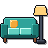
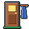
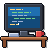
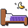

Ekran jest wpięty w pełne, klikalne makiety pilota. Ten katalog trzyma tylko wspólne pliki:
rooms.js, rooms.css i ikony w assets/.
docs/ux, port 4173)http://localhost:4174/ux/mockup-landscape/index.html (serwer z docs, port 4174)Ścieżka: Dom → Salon (Lampa, Klimatyzacja) → Lampa (jasność, barwa, efekt dla całej grupy, 3 żarówki) → żarówka / efekt.



